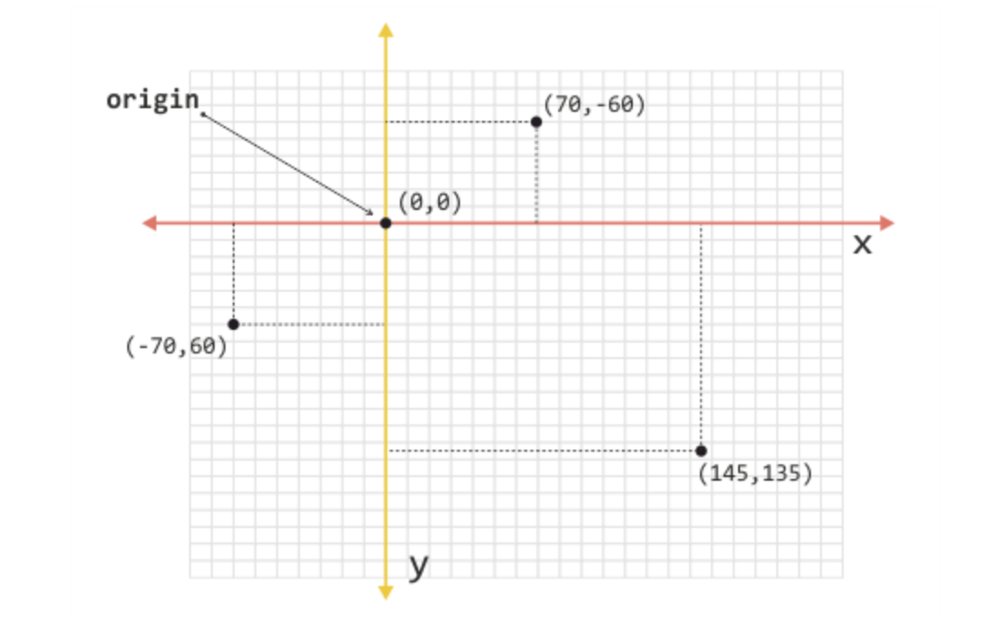

După cum ne sugerează şi denumirea, transformările asigură transformarea elementelor HTML prin influenţarea caracteristicilor lor vizuale. În acest fel, elementele trec dintr-o stare în alta, iar procesul de trecere dintr-o stare în alta se numeşte transformare.
În transformările CSS bidimensionale (2D) intră:
Definirea poziţiei unui obiect în spaţiu se obţine cu ajutorul coordonatelor din sistemul de coordonate. Există două astfel de coordonate, dacă determinăm poziţia unui obiect în spaţiu cu două axe.Când vorbim de sistemele de coordonate folosite pe web, o regulă standard impune ca axa orizontală să se numească x, iar cea verticală y
Începutul sistemului de coordonate este definit de punctul cu coordonate (0,0), iar un astfel de punct se numeşte punct de origine (origin point). Punctul de origine este, de fapt, poziţia de referinţă din cadrul sistemului de coordonate, în raport cu care se exprimă poziţia celorlalte puncte din sistem.
În imaginea de mai sus trebuie observat şi faptul că toate punctele aflate deasupra punctului de referinţă au valori negative ale coordonatelor y. De asemenea, toate punctele aflate în stânga punctului de referinţă au valori negative ale coordonatelor x.
Transformarea elementelor HTML cu CSS se obţine prin utilizarea proprietăţii transform. Până la standardizarea acestei proprietăţi, se utilizau şi formele cu prefixe specifice pentru diferite browsere:
Proprietatea CSS cu numele transform poate să accepte diferite valori care se exprimă prin funcţiile CSS. De fapt, fiecare transformare deţine propriul set de funcţii cu parametri pentru scopuri diferite, prin care se definesc caracteristicile transformării.